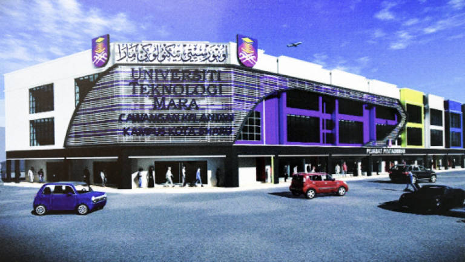
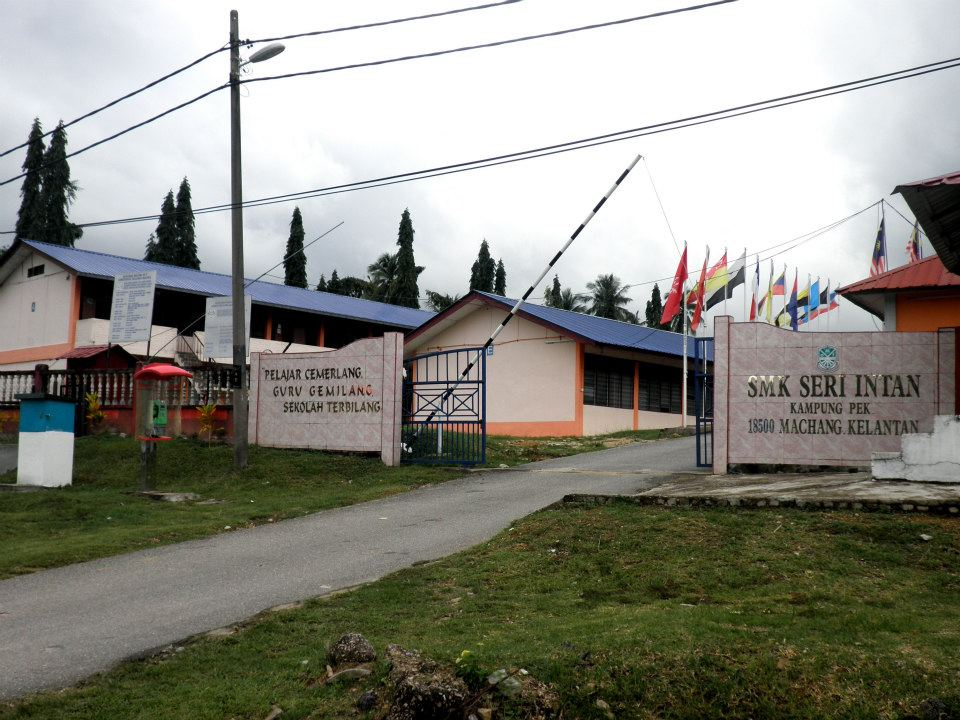
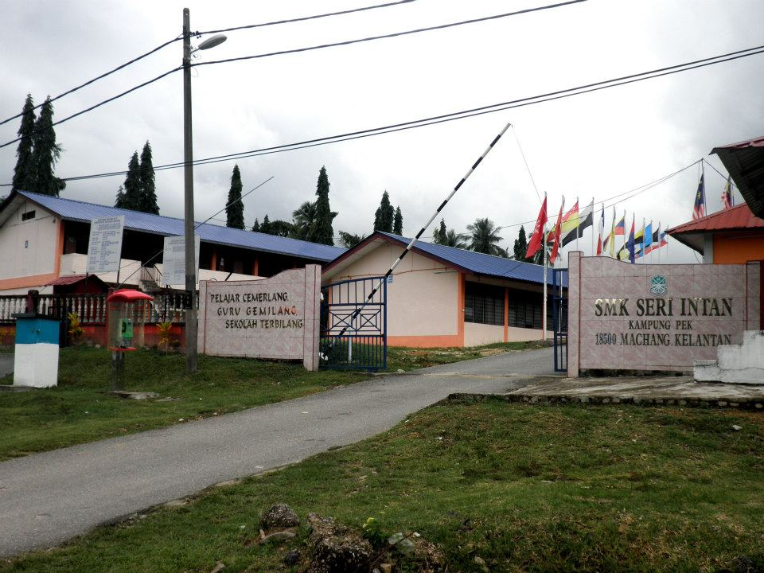
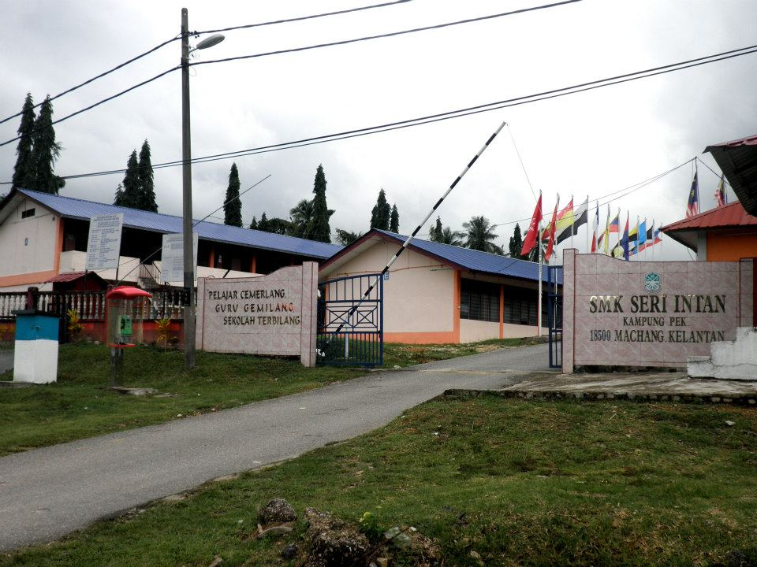
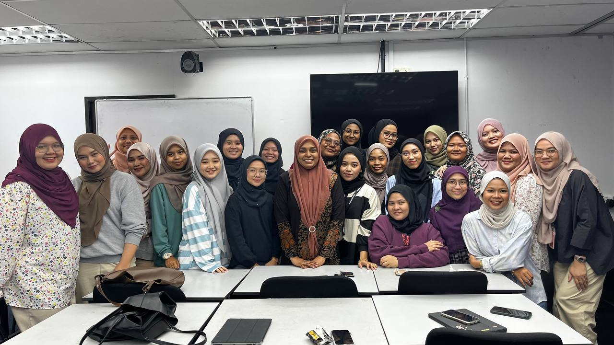
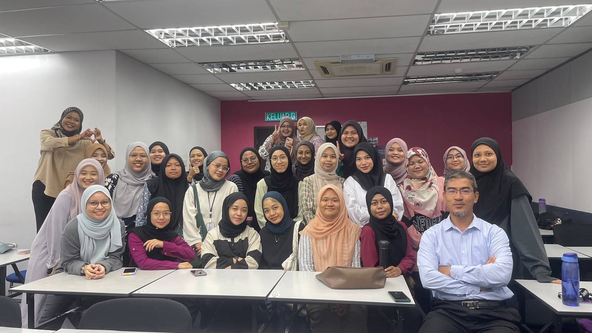
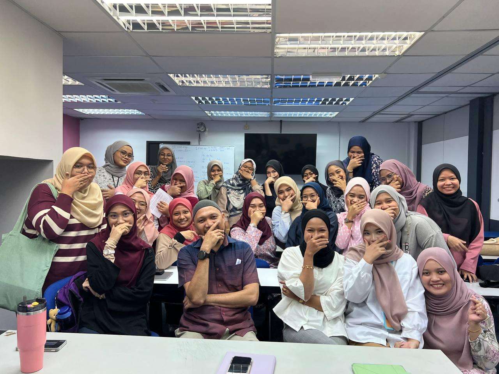
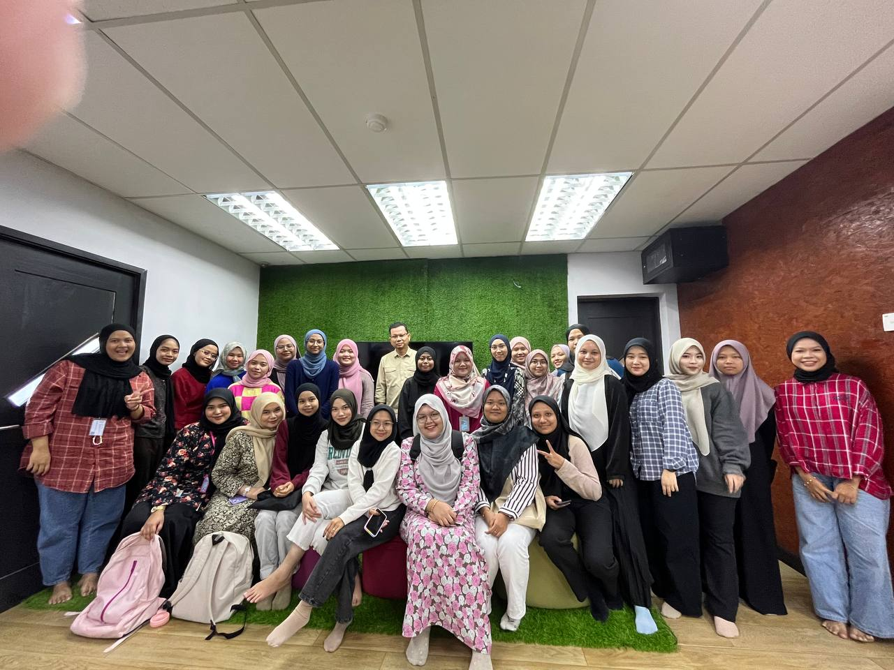

Education


 






Scroll Down
BACHELOR DEGREE
Universiti Teknologi Mara (UiTM)
Currently pursuing my Bachelor of Business (Hons.) degree in Finance at Universiti Teknologi MARA.
DIPLOMA
Universiti Teknologi Mara (UiTM)
In 2022, I successfully completed my Diploma in Business Studies, gaining the Vice-Chancellor Award as I consistently got the Dean's Award for each semester of my diploma programme and a 3.75 CGPA.
SPM
SMK Seri Intan
With 8 As and 1 B in the Sijil Pelajaran Malaysia (SPM) examination, I completed my education at SMK Seri Intan. The knowledge and abilities I built up during my studies at SMK Seri Intan gave me a strong educational foundation.